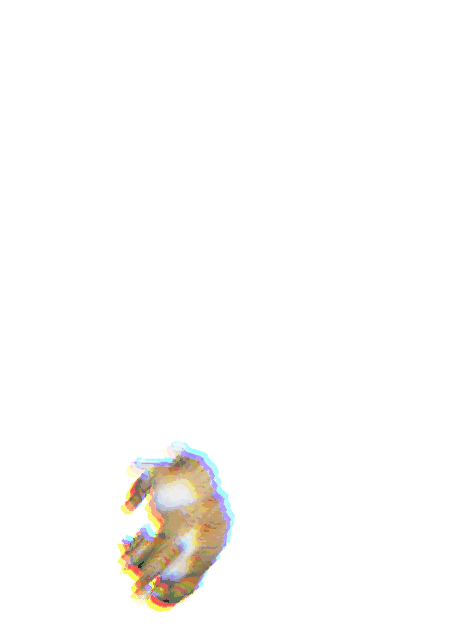

내 방학은 바지락이었네
이제 자취를 시작하게 되어서, 조금이나마 도움이 되고자 알바를 시작했다. 음식점 알바는 인생에서 처음이었기에, 걱정반 설렘반으로 시작했다. 하지만 세상은 생각보다 호락호락하지 않았고, 칼국수에도 존칭을 붙여야하는 상황에 착잡했다.
인내심도 기르고 자본주의에 굴복하는 아르바이트였다. 결국 그 스트레스를 풀려고 피시방에 가서 하루종일 게임을 하거나 코인노래방에서 노래를 왁왁 불러댔다.
알바하면서 좋았던 점은 밥이 맛있었다는 정도, 그리고 체력이 늘었다는 정도. 그리고 방학 내내 자취방을 알아보고 가구를 구하고, 바쁘지도 한가하지도 않게 보냈던 것 같다.

(그래도 친절한 손님들도 많다. 고생하는 딸이나 아들이 생각난다며 팁으로 2만원 주신 손님분... 정말 감사합니다. 적게 일하고 많이 버십시오.)
막막하다, 막막해
정신차려보니 개강이고, 방학동안 한 것이라고는 알바와 오버워치밖에 없었다. 왜 나 벌써 별 달았냐...

농담입니다. 타투했어요
어깨에 삼지창 타투를 했는데, 방학동안 가장 즐거웠던 경험! 아프면서도 결과를 보고나면 뿌듯한, 또 하고싶은! 타투의 종류에 대해서도 알아보고 기법에 대해서도 찾아보고, 새로운 분야에 눈을 뜬 기분이었습니다.